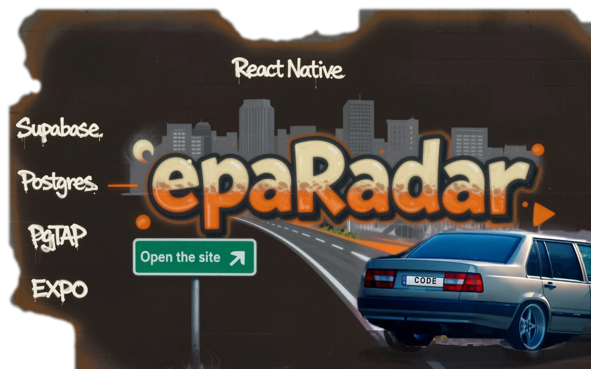
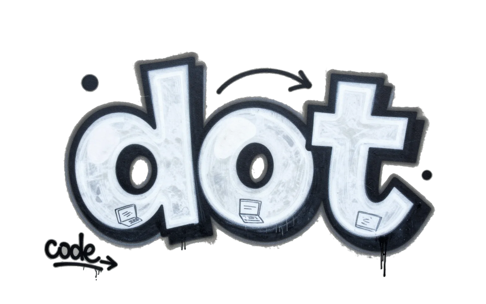
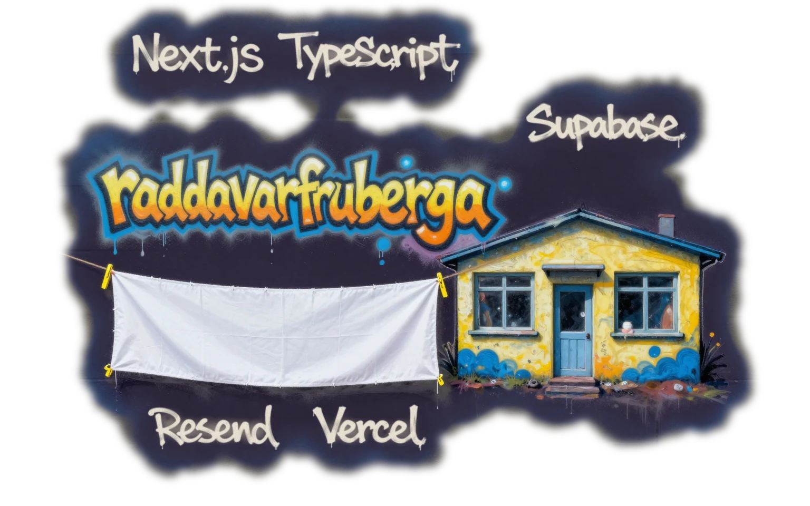
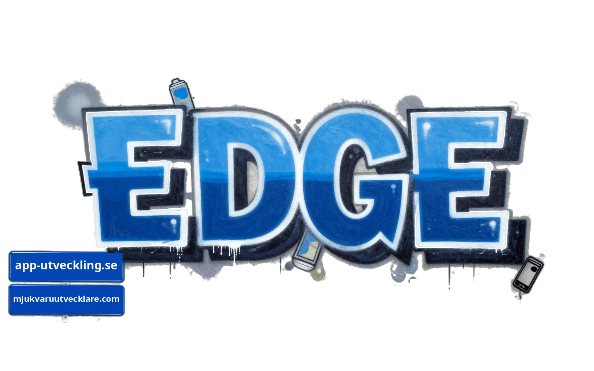
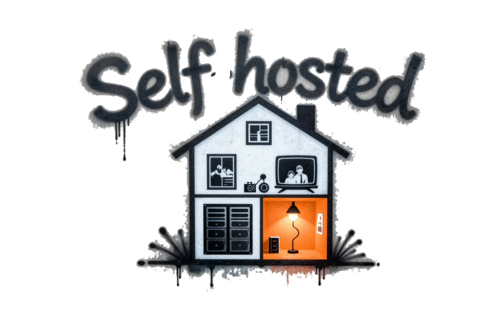
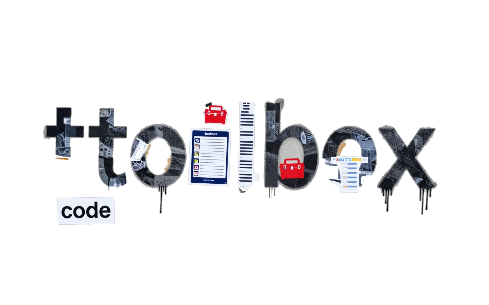
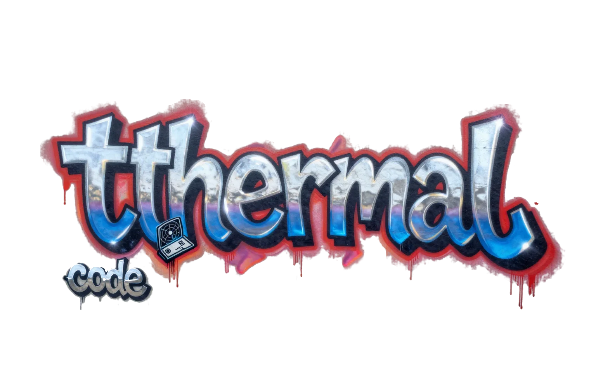
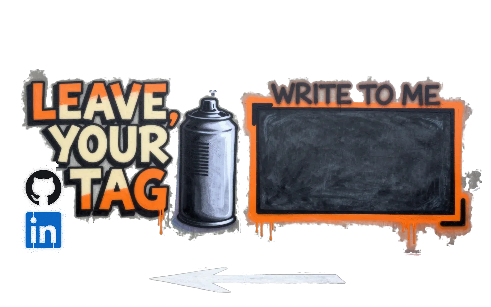

Tom Larsson · product engineer · TypeScript, React and C#/.NET
Screens,code andservers.
↓ See the work
epaRadar
dotThree things I built and run.
Selected work

Rädda vår Fruberga

EDGE
My own tools, in daily use.
More tools

Self-hostedMy own server with web apps, a TV app and a job tool.

ttoolboxClaude Code plugin with skills and agents to plan, build, review and prove work.
dotKeeps one GNU Stow dotfiles repo the same on every Linux PC.

tthermalOmarchy bar plugin that keeps an Intel laptop under a temperature you choose.
Every project above is a painting on one street at night.
Walkthrough it

Walk through it → About a minute of scrolling. Works best on a laptop.